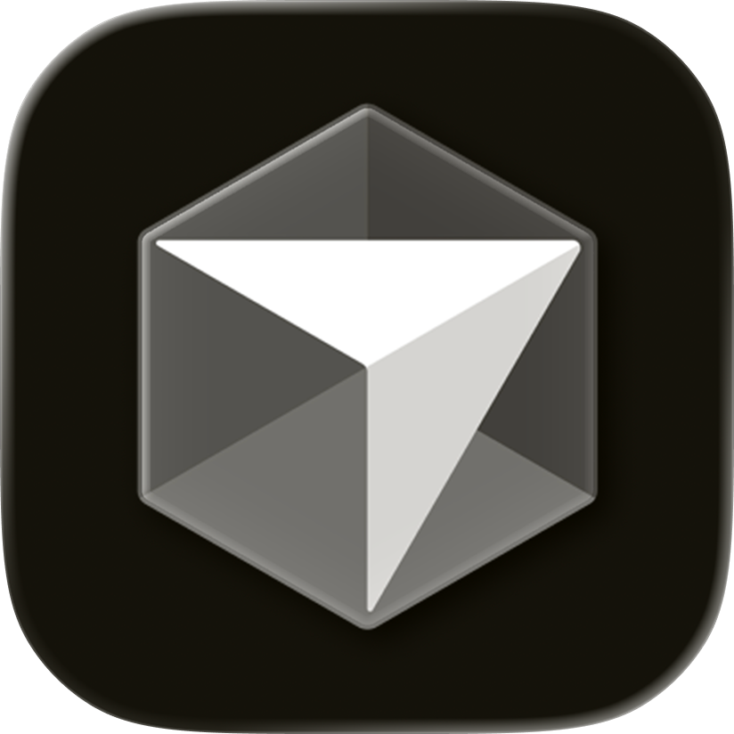

Логотипы нейросетей
Логотипы популярных нейросетей и ИИ-сервисов — ChatGPT, Claude, Gemini, Midjourney, Perplexity и других. Векторные SVG для презентаций и интерфейсов.

CursorЧастые вопросы
Сколько логотипов в подборке «Логотипы нейросетей и ИИ»?
В подборке «Логотипы нейросетей и ИИ» собрано 14 логотипов в форматах SVG и PNG. Каждый можно скачать бесплатно и открыть в редакторе цвета.
Можно ли использовать эти логотипы бесплатно?
Да, все логотипы доступны для скачивания бесплатно и без регистрации. Учитывайте, что бренды могут быть защищены авторским правом их владельцев — соблюдайте правила использования бренда.
В каком формате скачать логотипы?
Большинство логотипов доступны в векторном SVG (масштабируется без потери качества) и в PNG. Можно изменить цвета онлайн и экспортировать в Figma.
447+ логотипов в каталоге
Яндекс, Сбер, ВК, Ozon, Google и другие бренды
Открыть каталог